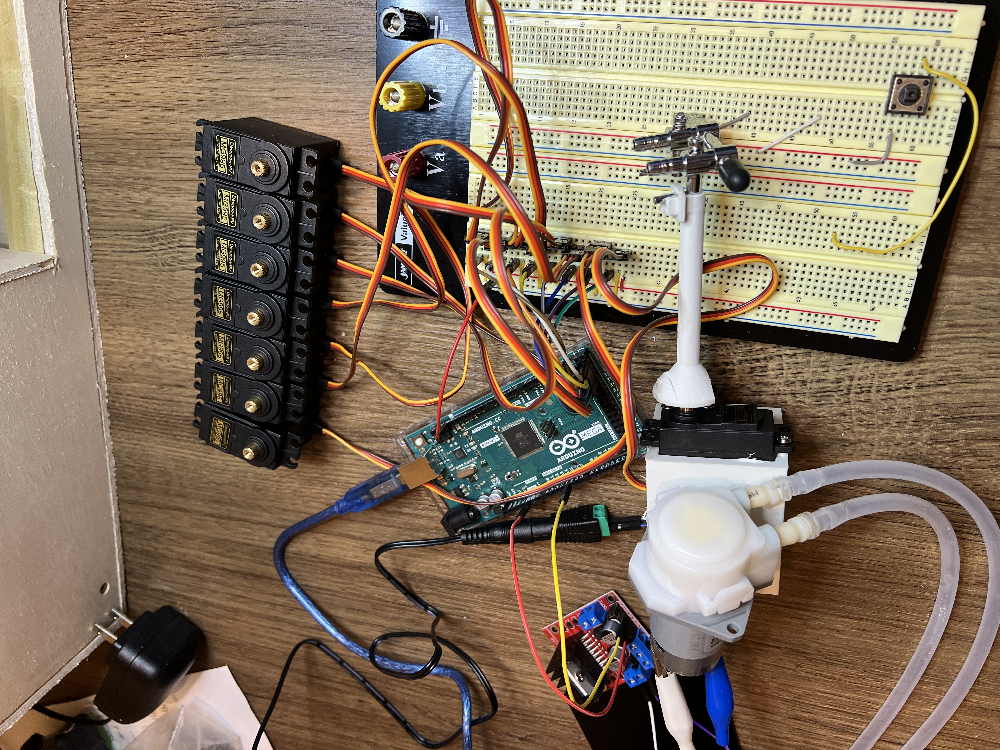
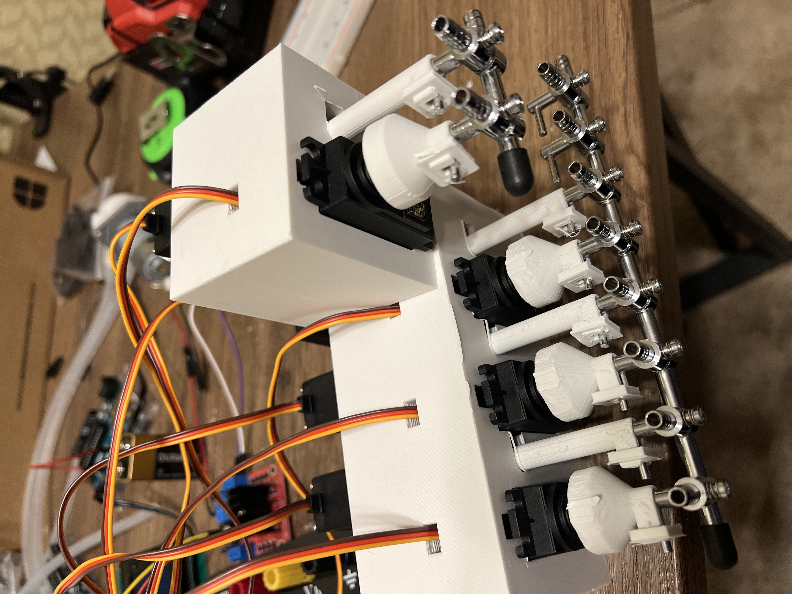

Gallery
Photos · drag & drop to preview


BrewBot is a beverage automation platform built to simulate a commercial drink-mixing system — consistent recipes, repeatable output, and automated cleaning. End-to-end: from CAD model to printed parts to wired controller to working hardware.
The printed parts were modeled in Fusion 360 with attention to alignment tolerance, leak reduction, repeatability, and maintenance access — pieces you can disassemble without breaking the print.
A microcontroller drives valve timing, pump activation, dispensing order, and cleaning routines. The firmware runs as a state machine that steps through each recipe: open the valve, dispense for a programmed duration, stop flow, move to the next ingredient, then run a cleaning cycle when the recipe completes.
Mechanical tolerances stack faster than you'd expect — a 0.2 mm gap in one mount becomes a leak two parts later. Pump timing calibration drifts with tubing fatigue, so the cleaning cycle wasn't optional, it was structural. The whole project was an exercise in integrating embedded firmware, CAD, fabrication, fluid systems, and electrical design into something that could actually run a recipe end to end.


Interactive viewer — click and drag to rotate, scroll to zoom. Drop any .stl file onto the viewer to preview it.
Drop a .stl file here, or place files in /models/brewbot/ and update data-models on the viewer element.